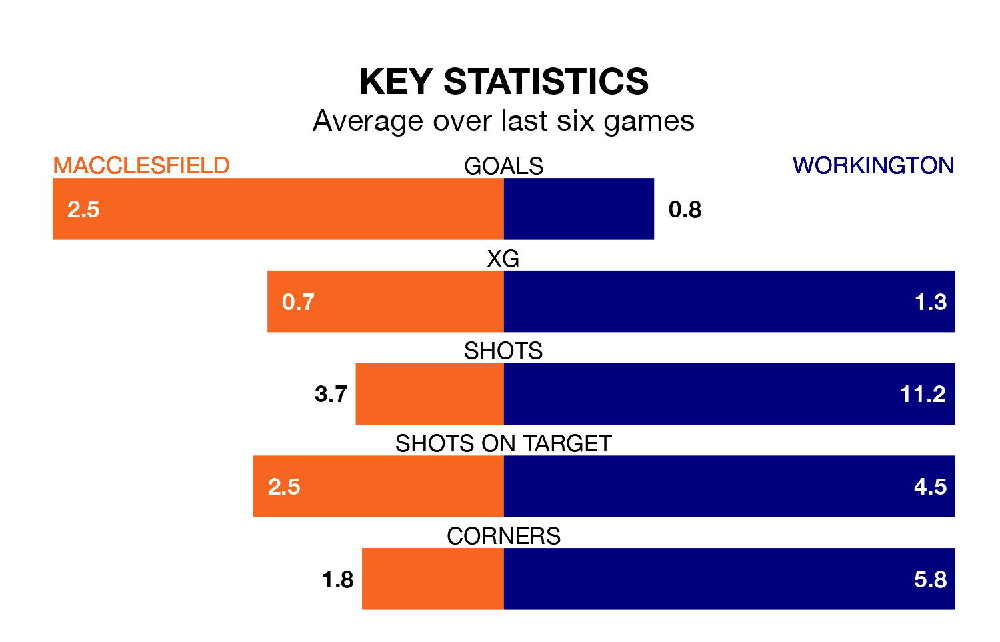

Macclesfield are heavy favourites to keep all three points at home in Saturday's kick-off against Workington.
Macclesfield, who sit second in the Northern Premier League with 36 games played, are priced at 1.3 to seal victory.
Sitting 14 places and 33 points behind them in the table, Workington are 7.8 to win with *Betting Company*, while the draw is at 5.3.
Macclesfield are in fantastic form in the Northern Premier League, with five wins and one loss from their last six games.
With no wins and six losses over that period, Workington's form is much worse – they have taken no points from 18, compared to the home team's 15.
With 80 goals in 36 games so far this season, Macclesfield are the league's third-highest scorers with 2.2 goals per game. And they are conceding fewer than average, letting in 42 goals at a rate of 1.2 per game.
The visitors are also above average scorers, with 1.7 goals per game, compared to a league average of 1.6. They have conceded 2.1 goals per game.
In the last three years, Macclesfield and Workington have played each other on three occasions. Macclesfield won two of them and they drew once.
Their last meeting was on December 19, when they played out a 0-0 draw.
Macclesfield's last match was on April 13, a 3-1 win against Basford United.
Workington lost 3-0 against Marine last time out, also on April 13.
Updated: 15:40 (UTC), 18/04/24